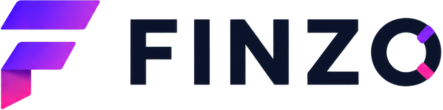

ל.א.ה דיגיטל מפתחת נכסים דיגיטליים בנישות ממוקדות: פלטפורמות, מחשבונים, מערכות לידים ואתרי נישה שמטרתם לייצר ביקוש, דאטה ושווי עסקי לאורך זמן.
כל נכס נבנה סביב צורך ברור, קהל יעד מוגדר ויכולת מדידה. המטרה היא ליצור נכס שאפשר להפעיל, להשביח, להחזיק לאורך זמן או למכור לגורם מתאים.

תצוגת האתר המלאה תתווסף בהמשךFINZO היא פלטפורמה בתחום המשכנתאות שמחברת בין משתמשים ליועצי משכנתאות, באמצעות מחשבון, תהליך לידים וכלים דיגיטליים שמיועדים למדידה ושיפור.
מערכת לתמחור כתבי כמויות, השוואת הצעות ומאגר ספקים לחברות הנדסה.
אנחנו בונים נכסים דיגיטליים סביב צורך עסקי ברור, ומשפרים אותם לפי ביקוש, שימוש, דאטה ותוצאה.
בודקים תחום, קהל יעד, כאב ברור ואפשרות לייצר ביקוש אמיתי.
מפתחים גרסה ראשונה ממוקדת שאפשר להשיק, לבדוק ולשפר.
מחברים תוכן, תנועה ולידים כדי לבדוק אם השוק מגיב בפועל.
בודקים שימוש, פניות, איכות לידים ועלות הגעה למשתמש רלוונטי.
משפרים את המוצר, התוכן והתהליך כדי להגדיל ערך לאורך זמן.
ממשיכים, משפרים, מוכרים או סוגרים לפי נתונים ולא לפי התלהבות.
הנקודה שבין האותיות היא נקודת החיבור — בין קהל, דאטה ותוצאה.
אנחנו לא בונים פרויקט ונעלמים. אנחנו חושבים כמו בעלי נכס: מה מייצר ביקוש, מה אפשר למדוד, ומה יכול להפוך לשווי לאורך זמן. כל נכס יכול להמשיך לפעול תחת ל.א.ה דיגיטל, להפוך לשיתוף פעולה או להימכר לגורם מתאים.
יש קהל עם בעיה אמיתית ולא רק רעיון שנשמע מעניין.
אפשר למדוד פניות, שימוש, איכות לידים או עניין עסקי.
הנכס לא תלוי בעבודה ידנית כבדה כדי להמשיך לפעול.
יש אפשרות להחזיק, להשביח, לשתף פעולה או למכור את הנכס בהמשך.
אפשר לפנות לגבי שיתוף פעולה, בדיקת כדאיות, רכישת נכס דיגיטלי או עניין עסקי ב־FINZO / BOQ Pro.